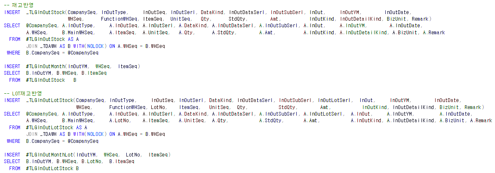
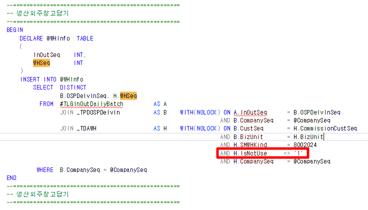

25.02.10 외주입고 재고집계 미조회
-- 품목별투입조회
SELECT * FROM _TESMCProdFMatInput WHERE MatItemSeq = 4749
SELECT * FROM _TESMCProdFMatInput WHERE MatItemSeq = 302130
SELECT * FROM _TLGInOutStock WHERE InOutYM = '202401' AND ItemSeq = 4749 AND InOutType = 150 -- 104 / 14 / 14
UNION
SELECT * FROM _TLGInOutStock WHERE InOutYM = '202401' AND ItemSeq = 302130 AND InOutType = 150
SELECT * FROM _TLGWHStock WHERE StkYM = '202401' AND ItemSeq = 4749
SELECT * FROM _TLGWHStock WHERE StkYM = '202401' AND ItemSeq = 302130
SELECT * FROM _TDASMinor WHERE MajorSeq = 8042 AND MinorValue = 150
-- 106 / 3 / 3 // 106 / 4 / 4
--=======================================================================
-- 외주입고
--=======================================================================
SELECT M.OSPDelvInDate,E.WhSeq,D.WhSeq, E.OSPDelvInNo,M.*
FROM _TPDOSPDelvInItemMat AS M WITH(NOLOCK)
JOIN _TPDOSPDelvInItem AS D WITH(NOLOCK) ON M.OSPDelvInSeq = D.OSPDelvInSeq
AND M.OSPDelvInSerl = D.OSPDelvInSerl
AND M.CompanySeq = D.CompanySeq
JOIN _TPDOSPDelvIn AS E WITH(NOLOCK) ON M.OSPDelvInSeq = E.OSPDelvInSeq
AND M.CompanySeq = E.CompanySeq
WHERE LEFT(E.OSPDelvInDate ,6) = '202401'
AND M.ItemSeq = 4749
UNION
SELECT M.OSPDelvInDate,E.WhSeq,D.WhSeq, E.OSPDelvInNo,M.*
FROM _TPDOSPDelvInItemMat AS M WITH(NOLOCK)
JOIN _TPDOSPDelvInItem AS D WITH(NOLOCK) ON M.OSPDelvInSeq = D.OSPDelvInSeq
AND M.OSPDelvInSerl = D.OSPDelvInSerl
AND M.CompanySeq = D.CompanySeq
JOIN _TPDOSPDelvIn AS E WITH(NOLOCK) ON M.OSPDelvInSeq = E.OSPDelvInSeq
AND M.CompanySeq = E.CompanySeq
WHERE LEFT(E.OSPDelvInDate ,6) = '202401'
AND M.ItemSeq = 302130
--=======================================================================
--=======================================================================
_tdawh
--SELECT * FROM _TDAWH WHERE WHSeq IN (13,14,42,54)
--42 14
--54 13
외주입고의 창고 (_TPDOSPDelvIn - WHSeq) 가 사용안함 되어있어,
재집계 안된 것으로 확인
재집계
-
_SWLGReInOutStockSum
-
_SWLGReInOutStock (창고 NULL로 인해 집계 미반영 => NULL인 이유 = 4번)

-
_SWLGReInOutDailyForOSPDelvIn -- (외주입고)
-
_SWLGInOutDailyForOSPDelvIn
-
외주입고창고(+)
-
사업단위입고대기창고(-)
-
생산외주창고(-)
- , (SELECT TOP 1 WHSeq FROM @WHInfo WHERE InOutSeq = A.InOutSeq) AS WHSeq
-
